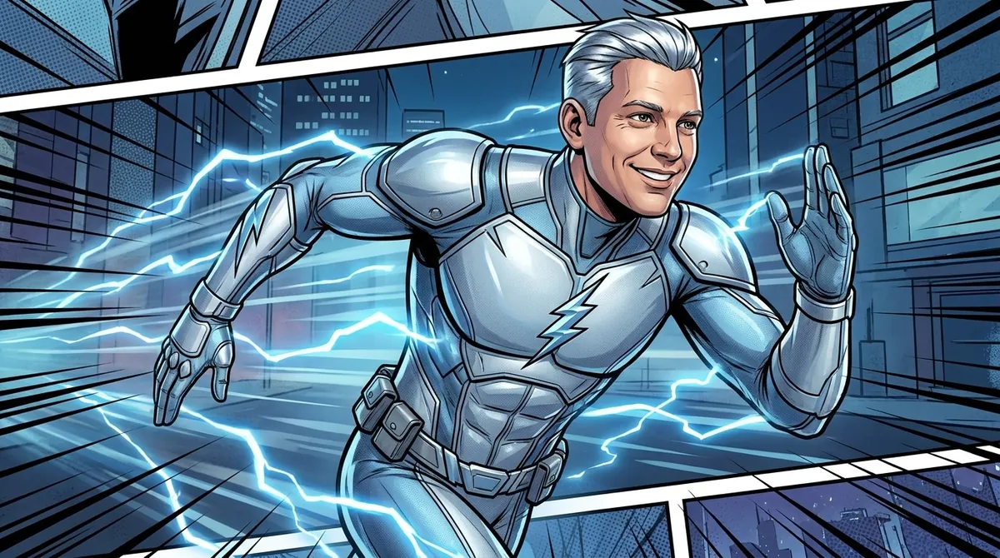

📡 Küldetés-eligazítás

📡 Fürge Pjotr: A Tükör-világban két egymás utáni elmozdulásból kell megmondanom, hová jutok. A vektor ehhez a távolságot és az irányt együtt adja meg. Megtanuljuk összeadni az elmozdulásokat, és megnézzük, mit jelent egy vektor ötszöröse vagy ellentettje.
A vektorral irányított mennyiségeket írunk le: elmozdulást, sebességet, erőt. Jelölése \(\vec{a}\) vagy \(\overrightarrow{AB}\), ahol \(A\) a kezdő-, \(B\) a végpont.
Irányított szakasz és egyenlőség
📗 Vektor
A vektort irányított szakasszal ábrázoljuk. Egy nemnulla vektort a nagysága (hossza, \(|\vec{a}|\)) és iránya határoz meg, a kezdőpontja nem számít. Két nemnulla vektor egyenlő, ha azonos hosszúak és ugyanabba az irányba mutatnak: az őket ábrázoló szakaszok egy egyenesre vagy párhuzamos egyenesekre esnek, és azonos az irányításuk. A nullvektor (\(\vec{0}\)) hossza \(0\); iránya nincs értelmezve, ezért megállapodás szerint minden vektorral egyállásúnak tekintjük, bármely két nullvektor egyenlő, és az ellentettje önmaga. Egy nemnulla \(\vec{a}\) vektor ellentettje \(-\vec{a}\): ugyanolyan hosszú, de ellentétes irányú.
Összeadás és kivonás
📘 Két szabály
Háromszög-szabály: a második vektort az első végpontjához illesztjük; az összeg az első kezdőpontjától a második végpontjáig mutat. Paralelogramma-szabály: a két vektort közös kezdőpontból rajzoljuk fel. Ha az őket ábrázoló szakaszok nem esnek egy egyenesbe, az összeg a kifeszített paralelogramma közös kezdőpontból induló átlója. Egy egyenesbe eső szakaszoknál a háromszög-szabályt használjuk. A kivonás az ellentett hozzáadása: \(\vec{a}-\vec{b}=\vec{a}+(-\vec{b})\).
🎯 Gyors kérdés
Mikor egyenlő két nemnulla vektor?
Skalárral szorzás
📗 A \(k\vec{a}\) vektor
Legyen \(k\) valós szám. A \(\vec a\) vektor \(k\)-szorosa a \(k\vec a\) vektor, amelynek hossza \(|k|\cdot|\vec{a}|\). Ha \(\vec a\ne\vec 0\) és \(k>0\), iránya változatlan; ha \(\vec a\ne\vec 0\) és \(k<0\), iránya megfordul; a szorzat pontosan akkor nullvektor, ha \(k=0\) vagy \(\vec a=\vec 0\). Két nemnulla vektor pontosan akkor egyállású (párhuzamos vagy egy egyenesbe eső), ha egyik a másik számszorosa: \(\vec{b}=k\vec{a}\).
Vektorok a geometriában
✏️ Kiképzési szimuláció
Az \(ABCD\) paralelogramma átlóinak felezőpontja \(S\). Legyen \(\vec{n}=\overrightarrow{SD}\) és \(\vec{m}=\overrightarrow{SA}\). Fejezd ki \(\vec{m}\) és \(\vec{n}\) segítségével: \(\overrightarrow{DC}\), \(\overrightarrow{BA}\), \(\overrightarrow{BC}\), \(\overrightarrow{CA}\).Megoldás
\(S\) mindkét átlót felezi, ezért \(\overrightarrow{SC}=-\vec{m}\) és \(\overrightarrow{SB}=-\vec{n}\). Innen:
\[\overrightarrow{DC}=-\vec{m}-\vec{n},\quad \overrightarrow{BA}=\vec{m}+\vec{n},\quad \overrightarrow{BC}=\vec{n}-\vec{m},\quad \overrightarrow{CA}=2\vec{m}.\]💡 Hol találkozol vele?
Fürge Pjotr előbb \(\vec{a}\), majd \(\vec{b}\) elmozdulást tesz meg. Az eredő elmozdulás \(\vec{a}+\vec{b}\): ez a kezdőpontból a végpontba mutat. A megtett út hossza és az elmozdulás különböző mennyiség. Ha körbesétálsz egy háztömbön, majd visszaérsz az indulópontba, a megtett út pozitív, az elmozdulásvektorok összege viszont \(\vec 0\).⚠️ Kán csapdája
Egy nemnulla \(\vec a\) vektor ellentettje ugyanolyan hosszú, de ellentétes irányú; a nullvektor ellentettje önmaga. Bármely \(A\) és \(B\) pontra \(\overrightarrow{AB}=-\overrightarrow{BA}\). Nemnulla vektornál a végpontok cseréje megfordítja az irányt.🎯 Gyors kérdés
Melyik igaz mindig?
Gyakorolj! Válaszd a bevetésed:
📡 Vanda: A vektorokkal már le tudod írni az elmozdulást. A következő leckében egész síkbeli alakzatokat tolunk el, tükrözünk és forgatunk — úgy, hogy a pontjaik közötti távolságok megmaradjanak.